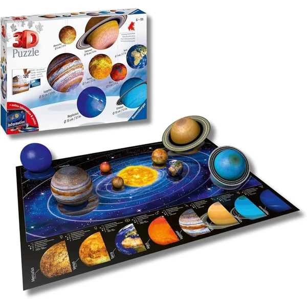

✨ Guía especial
Puzzle 3D Ravensburger: catálogo completo y opiniones
Puzzle Ball, Night Edition y su catálogo por temática
Puzzle Ball, Night Edition y su catálogo por temática
Ravensburger es la marca de referencia dentro del mundo del puzzle 3D: la que tiene más licencias oficiales, mejor acabado de pieza y, en general, mayor popularidad dentro del sector. En esta guía repasamos su catálogo por línea de producto —Puzzle Ball, Night Edition— y por temática, además de dónde comprarlo y las dudas más frecuentes antes de elegir un modelo.
Ravensburger destaca frente al resto de marcas del sector por tres motivos concretos: es la única con licencias oficiales de peso (Harry Potter, Disney, coches de gama alta), su sistema de piezas encaja con más precisión y menos margen de error que el de marcas más económicas como CubicFun, y su catálogo es también el más amplio en cuanto a formatos —desde esferas hasta réplicas planas verticales de gran tamaño.
El contrapunto es el precio: al ser la opción premium del mercado, sus modelos suelen costar más que una alternativa equivalente de otra marca. Puedes ver el resto de marcas de puzzle 3D en nuestra guía general.
El Puzzle Ball es probablemente el formato más característico de Ravensburger dentro de los puzzles 3D: en vez de una estructura plana o arquitectónica, las piezas encajan formando una esfera completa. Es un formato exclusivo de la marca, y dentro de él destaca especialmente la línea de sistema solar y planetario, donde cada planeta se representa como una esfera individual dentro de un set conjunto — una de las opciones con más componente educativo de todo el catálogo, muy adecuada para regalar a niños con interés en el espacio.
También existen versiones de mayor tamaño y número de piezas (como el modelo de 540 piezas), pensadas ya para un público adulto que busca un reto más largo que el de las esferas pequeñas. Dentro de esta línea, el Puzzle Ball de Pokémon es una de las variantes con más búsqueda propia.

Sistema Solar Ver en Amazon →La Night Edition es la línea de Ravensburger que incorpora iluminación LED integrada en el propio puzzle: una vez montado, un pequeño circuito interno enciende las ventanas o zonas concretas de la figura, creando un efecto muy vistoso a oscuras. Es especialmente popular en modelos arquitectónicos —monumentos y edificios— donde el efecto de las ventanas iluminadas aporta bastante más que en figuras de vehículos o esferas.
No es un modelo distinto por tema, sino un extra que Ravensburger aplica a varias de sus réplicas ya existentes, así que a la hora de comprar conviene fijarse bien en si la ficha de producto indica explícitamente "Night Edition" — el mismo monumento suele tener versión estándar y versión con luz a precios distintos.
 Torre Eiffel Led
Ver en Amazon →
Torre Eiffel Led
Ver en Amazon →
Ravensburger fabrica versión propia de la mayoría de temas populares dentro del puzzle 3D, así que si buscas un modelo de esta marca en concreto, probablemente ya tengas la guía completa dedicada al tema en cuestión, con Ravensburger incluido entre las opciones:
Harry Potter — el Castillo de Hogwarts es su modelo con licencia más popular. Ver guía completa de puzzle 3D de Harry Potter.
Monumentos — Torre Eiffel, Big Ben y el resto de edificios icónicos, muchos disponibles también en Night Edition.
Coches — algunos modelos de coches de gama alta con licencia oficial de marca. Ver guía de puzzles 3D de vehículos.
Esta sección no repite el contenido de esas guías, solo dirige hacia ellas — si ya sabes qué tema buscas, es más rápido ir directamente al artículo dedicado que seguir leyendo aquí.
El catálogo completo de Ravensburger se encuentra principalmente en Amazon, donde suele haber más variedad disponible de forma constante que en cualquier tienda física, incluidas las versiones Night Edition y las líneas menos comunes como el Puzzle Ball.
También se puede encontrar en Carrefour, aunque con disponibilidad más limitada y sujeta a campaña — si buscas un modelo concreto de la marca, Amazon es la opción más fiable.
Es una de las marcas mejor valoradas del sector: destaca por la precisión de encaje de sus piezas y el acabado general, aunque su precio es más elevado que el de otras marcas como CubicFun. Para quien prioriza calidad sobre precio, suele ser la opción con menos quejas de montaje o piezas defectuosas.
Es la línea de puzzles 3D con luz LED integrada: un pequeño circuito que ilumina zonas concretas de la figura una vez montada, muy habitual en modelos de monumentos y edificios.
El Puzzle Ball forma una esfera completa en vez de una estructura plana o arquitectónica; es un formato exclusivo de la marca, con la línea de sistema solar y planetario como una de sus versiones más populares.
Amazon suele ser la opción con más variedad disponible de forma constante, incluidas las versiones Night Edition. También se encuentra en Carrefour, aunque con disponibilidad más limitada.
Todos los tipos, materiales, marcas y modelos según la edad.